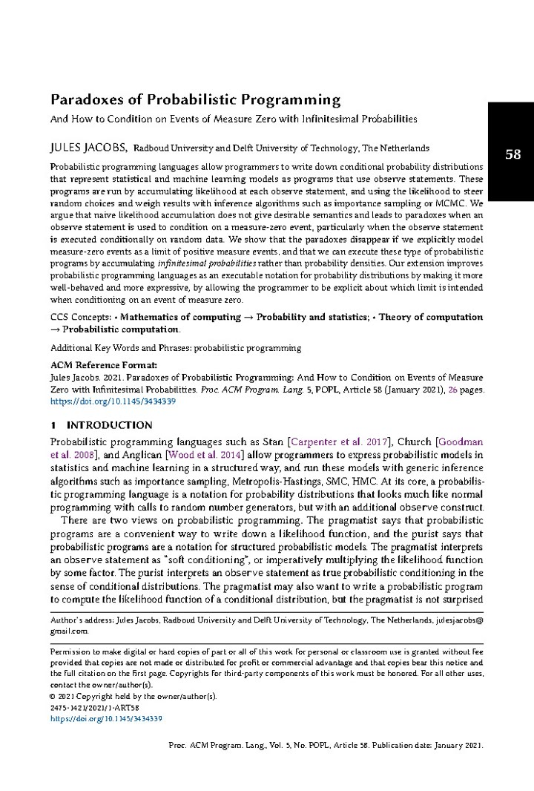

And How to Condition on Events of Measure Zero with Infinitesimal Probabilities
Probabilistic programs that condition on measure-zero events with observe statements can behave paradoxically, especially when the observe runs conditionally on random data. This paper models such events as limits of positive-measure events and runs programs by accumulating infinitesimal probabilities instead of densities. The paradoxes disappear, and programmers can say which limit they intend.

Read the paperProbabilistic programming languages allow programmers to write down conditional probability distributions that represent statistical and machine learning models as programs that use observe statements. These programs are run by accumulating likelihood at each observe statement, and using the likelihood to steer random choices and weigh results with inference algorithms such as importance sampling or MCMC. We argue that naive likelihood accumulation does not give desirable semantics and leads to paradoxes when an observe statement is used to condition on a measure-zero event, particularly when the observe statement is executed conditionally on random data. We show that the paradoxes disappear if we explicitly model measure-zero events as a limit of positive measure events, and that we can execute these type of probabilistic programs by accumulating infinitesimal probabilities rather than probability densities. Our extension improves probabilistic programming languages as an executable notation for probability distributions by making it more well-behaved and more expressive, by allowing the programmer to be explicit about which limit is intended when conditioning on an event of measure zero.
@article{jacobs2021paradoxes,
title = {Paradoxes of probabilistic programming: and how to condition on events of measure zero with infinitesimal probabilities},
volume = {5},
ISSN = {2475-1421},
url = {https://doi.org/10.1145/3434339},
DOI = {10.1145/3434339},
number = {POPL},
journal = {Proceedings of the ACM on Programming Languages},
publisher = {Association for Computing Machinery (ACM)},
author = {Jacobs, Jules},
year = {2021},
month = Jan,
pages = {1--26}
}